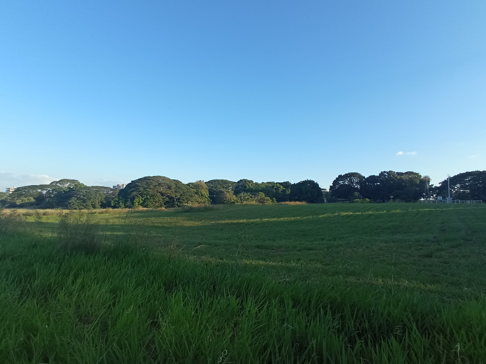

¿Sabias que?
El Jardín Botánico se inicia como organización en mayo de 1979 con el plan maestro para el desarrollo del jardín botánico ecológico de la Universidad Nacional Experimental de los Llanos Occidentales “Ezequiel Zamora” donde se proyectó como una reserva de plantas de la región de los llanos y otras partes del mundo, así como un centro de estudio.
Reseña Historica
El Jardín Botánico alberga una rica colección de flora regional y ha sido reconocido por su labor en la conservación de la biodiversidad y de la educación ambiental. La estructura administrativa en sus inicios se estableció orgánicamente con una dirección conformada por 2 unidades: de especies, animales y vegetales, sin un número preciso de la totalidad de administración y otra de biodiversidad, para su debida organización y funcionamiento. Sin embargo en 2005 surgió la necesidad de incorporar otras áreas para sus actividades. En sus 300 hectáreas de terreno, cuenta con diferentes microclimas y diversidad especies presentes en él.
Este jardín consta de un zoológico con una superficie que corresponden a una laguna donde albergan diferentes tipos de peces entre ellos tenemos:
- pavón copaneca (Astronotus ocellatus)
- cachamas (Colossoma macropomum)
- palometas (Mylossoma duriventre)
- garzas blancas (Egretta thula)
- garza real (Casmerodius albus)
- garcita reznera (Bubulcus ibis)
- cotua zamura (Phalacrocorax olivaceus)
La Fundación Jardín Botánico Ezequiel Zamora o conocido como el Jardín botánico de la UNELLEZ, es un jardín botánico y un zoológico, ubicado dentro de las instalaciones de la Universidad Nacional Experimental de los Llanos Occidentales Ezequiel Zamora (UNELLEZ), de la ciudad de Barinas, del estado Barinas, Venezuela. Es miembro del BGCI, siendo su código de identificación internacional como institución botánica así como de su herbario.
Localización
Se ubica al noroeste de la ciudad de Barinas, al pie de la Cordillera de los Andes; a una altitud de 200 metros sobre el nivel del mar y presentando una temperatura media anual de 28 °C.
El Jardín Botánico de la Universidad Ezequiel Zamora (UNELLEZ) Apdo. Postal 187 Av. 23 de enero de 1987 Barinas, Barinas 5201-A, Venezuela.
Visitados por turistas nacionales e internacionales, de lunes a viernes de 7:00 a 12:00 y de 13:00 a 15:00, realizando las instituciones o grupos, una solicitud con anticipación a la Coordinación de Turismo para reservar la fecha a realizar la visita guiada a las instalaciones del jardín. El público además de hacer las visitas puede adquirir material didáctico de las plantas forestales, frutales y de los animales existentes.